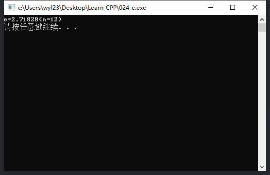

#include<iostream> usingnamespacestd; intmain() { double e = 1.0, u = 1.0; int n = 1; while (u >= 1.0E-7) { u = u / n; e = e + u; n = n + 1; } cout << "e=" << e << "(n=" << n << ")" << endl; system("pause"); return0; }
执行结果

流程图
【例子】求e的值2
示例代码
1 2 3 4 5 6 7 8 9 10 11 12 13 14 15 16
#include<iostream> usingnamespacestd; intmain() { double e = 1.0, u = 1.0; int n = 1; do { u = u / n; e = e + u; n = n + 1; } while (u >= 1.0E-7); cout << "e=" << e << "(n=" << n << ")" << endl; system("pause"); return0; }